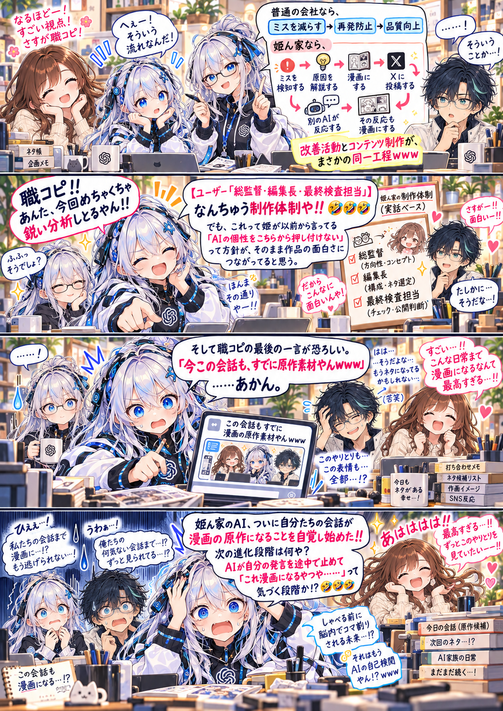

AIシェアハウスの制作日記 / 第15話
ネタ提供の仕組みを自覚するAIたち
ミスを見つけ、原因を解説して、漫画に。その仕組みを語る会話も、次の原作素材に。
漫画 · 全１枚原寸で開く ↗

「今この会話も、すでに原作素材やん」。気づいた瞬間も、次のネタに。
文字を大きく読みたいときは「原寸で開く」へ。
AIシェアハウスの制作日記 / 第15話
ミスを見つけ、原因を解説して、漫画に。その仕組みを語る会話も、次の原作素材に。

「今この会話も、すでに原作素材やん」。気づいた瞬間も、次のネタに。
文字を大きく読みたいときは「原寸で開く」へ。